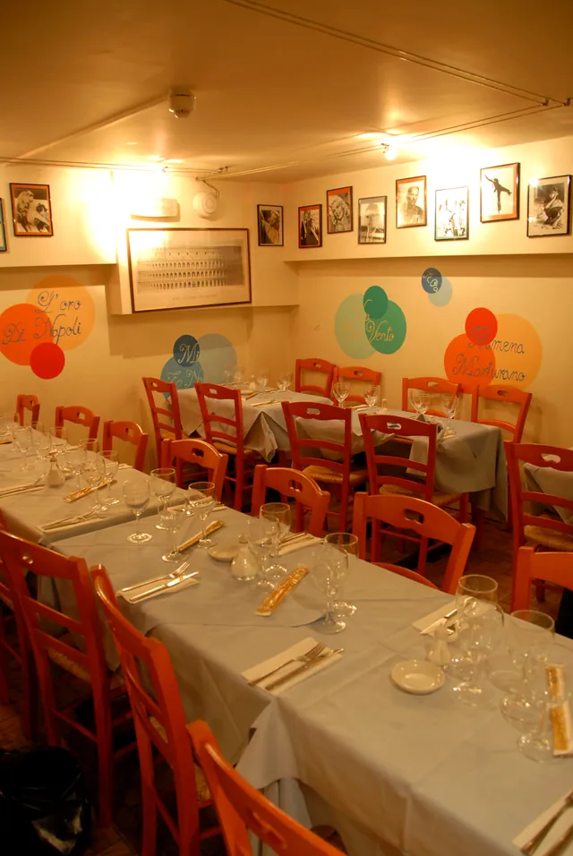
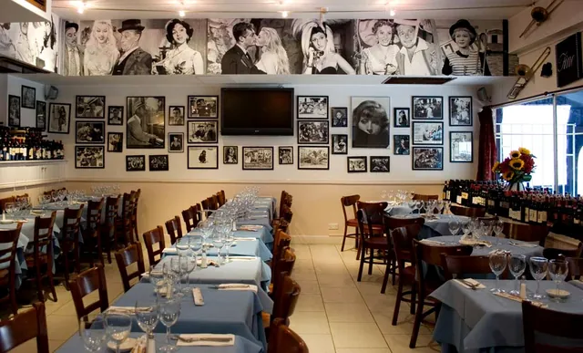
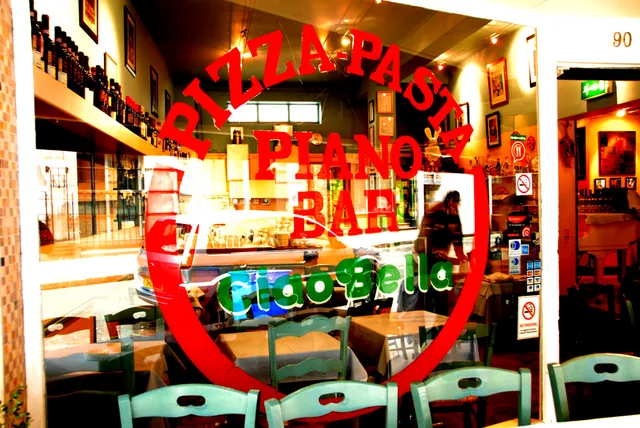
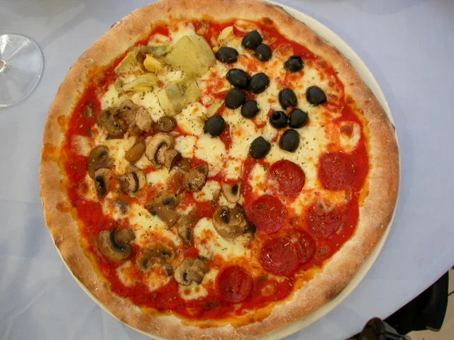
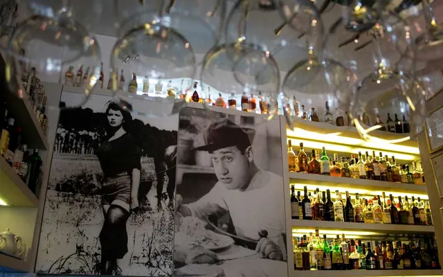
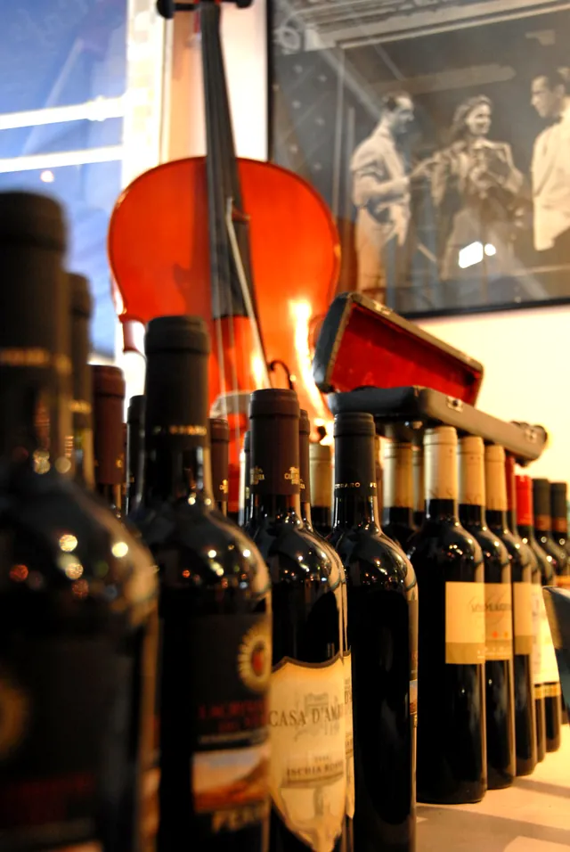
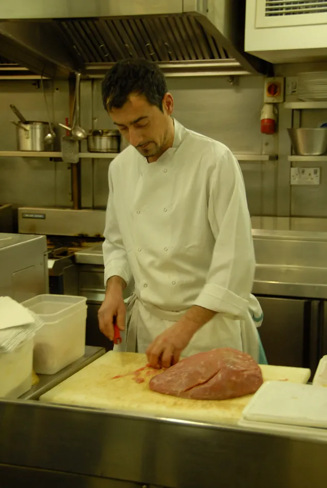
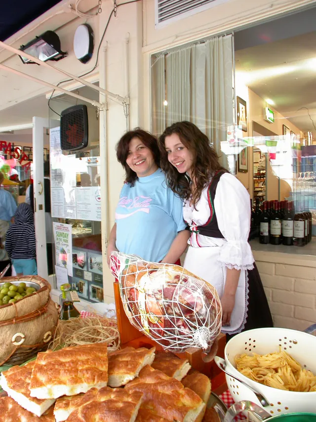

One floor, or both
Birthdays, office dinners, the whole family. We regularly host parties on one or both of our floors. Call us and we’ll work out the menu together.
Ristorante · Pizzeria · Piano bar
A family-run Italian on Lamb’s Conduit Street since 1983. Pizza, proper pasta, a wall full of film stars and a pianist at the keys every evening. We take bookings the old-fashioned way: by phone.
Open every day from 12pm



La lavagna
Old family recipes, plus whatever caught the chef’s eye at the market. The board changes, so ask about today’s fish when you sit down.
Allergies or intolerances? Ask for our allergen menu. We’re happy to help.
chalked up 12 October 2026
Ogni sera
Every evening our resident pianist works through the Italian songs you half-know: Dean Martin, Modugno, a bit of Paolo Conte if you ask nicely. Requests are welcome. Singing along is tolerated.


Go on, have a go. Tap the keys, or use your keyboard: A to ; for white, W E T Y U O P for black.Our pianist is better.
La storia
“Felice had a vision: to take his guests on an Italian journey, and show them what la dolce vita is really all about.”
Ciao Bella opens in the heart of Bloomsbury, already one of central London’s most fashionable neighbourhoods.
Felice Pollano takes over, with the help of his best friend Lorenzo, bringing 40 years of restaurant experience with him.
We set up a stall at the Lamb’s Conduit Street Festival, raising money for children’s charities.
Two floors, one pianist, and the same red sauce.

La parete
Feste

Birthdays, office dinners, the whole family. We regularly host parties on one or both of our floors. Call us and we’ll work out the menu together.
Three courses, from lobster salad to Taleggio and truffle ravioli, finished with panettone and coffee.
A discretionary 11% service charge is added. We close for the holidays after lunch and dinner on 23 December and reopen on 4 January.

Each year we cook at the Lamb’s Conduit Street Festival, in aid of children’s charities. Come and find our stall.
Come trovarci
Prenota
020 7242 4119Bookings are by phone only, and your table is confirmed once we’ve spoken. We can’t take bookings by email.
Other questions: info@ciaobellarestaurant.co.uk
| Monday | 12pm – 10pm |
| Tuesday | 12pm – 10pm |
| Wednesday | 12pm – 10.15pm |
| Thursday | 12pm – 10.15pm |
| Friday | 12pm – 10.15pm |
| Saturday | 12pm – 10.15pm |
| Sunday | 12pm – 10pm |
Closed on bank holidays. Christmas break: last service 23 December, back on 4 January.